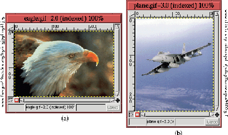
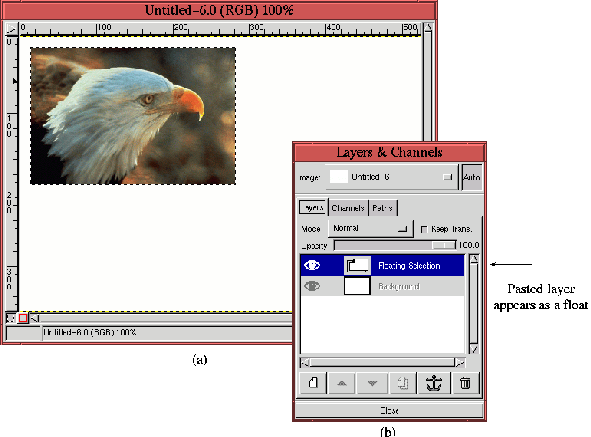
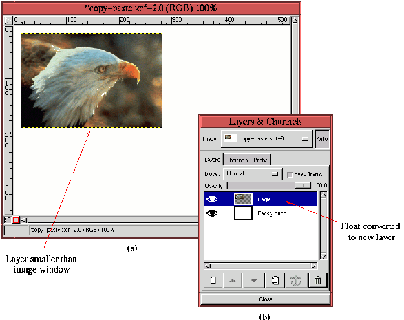
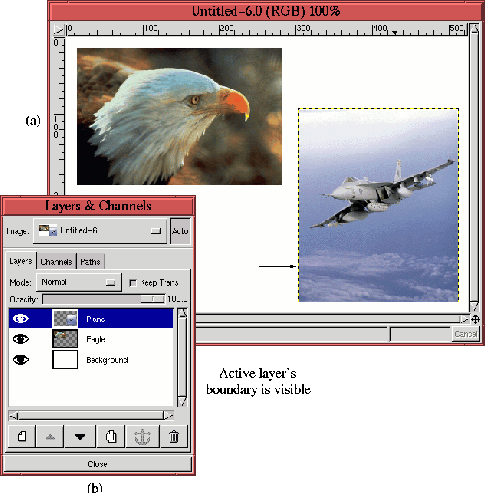

Next: 7.5
Плавающая выделенная область Up: 7. О
слоях Previous: 7.3.6
deletinglayers
Next: 7.5
Плавающая выделенная область Up: 7. О
слоях Previous: 7.3.6
deletinglayers
7.4 Экспорт и импорт слоев
Перенос элементов одного изображения в другое - одна из наиболее часто
используемых операций с использованием слоев. Это - основа создания композиции,
очень важная тема, которую во всех подробностях мы рассмотрим в главе 12.
Перенос слоя в изображение осуществляется при помощи функций
``Копировать'', ``Вырезать'' и ``Вставить'' (см.
раздел 6.7).
Процесс импортирования слоев настолько важен, что в этом разделе мы рассмотрим
пример, в котором в деталях показано, как это делается. Все, сказанное ниже
имеет смысл запомнить, потому что с этим процессом мы будем часто сталкиваться
на протяжении всей книги.
Чтобы проиллюстрировать процесс импорта слоев, мы возьмем две картинки,
которые показаны на рис. 7.8.
Каждую и этих двух картинок, состоящую из одного слоя, мы перенесем в третью,
которая в конце работы будет состоять из трех слоев.
Figure: Картинки для иллюстрации
действия функций ``Копировать'' и ``Вставить''
 |
Для начала создадим новое изображение такого размера, чтобы в него уместились
картинки, которые мы хотим туда перенести. Затем скопируем картинку 7.8
(a) в буфер. Для этого подведем курсор мыши к изображению и выберем в меню окна
изображения пункт Правка->Скопировать. Функция копирования также
вызывается клавишами Ctrl-c при активном окне изображения. Таким образом,
мы скопировали активный слой изображения в буфер по умолчанию. Обратите внимание
на то, в изображениях с несколькими слоями в буфер копируется активный слой.
Таким образом, перед копированием следует посмотреть, активен ли нужный вам
слой. Этот же результат можно получить вырезав изображение, а не скопировав его.
Функция ``Вырезать'' помещает копию слоя в буфер и удаляет его из окна
изображения. Вызывается эта функция из меню окна изображения
Правка->Вырезать или клавишами Ctrl-x при активном окне
изображения.
Итак, рисунок с орлом помещен в буфер, его можно вставлять в новое
изображение. Переместим курсор в новое изображение и вызовем функцию
``Вставить'' из меню окна изображения Правка->Вставить (так же
можно воспользоваться ``горячими клавишами'' Ctrl-v при активном окне
изображения.) Результат показан на рисунке 7.9
(a).
Figure: Импорт первой
картинки
 |
Окно диалога ``Слои'' для этого изображения показан на рисунке 7.9
(b). Там видно, что вставленный слой появляется в качестве плавающей выделенной
области. Основной слой, фон, изображен серым, это говорит о том, что его
невозможно сделать активным.
Вставленный слой появляется на изображении (рис. 7.9
(a)) и выглядит как выделенная область, отмеченная ``муравьиной дорожкой''. Эту
плавающая выделенную область можно перемещать, используя инструмент
``Перемещение'', расположенный на панели инструментов.
Когда место слоя в изображении определено, его надо прикрепить к нижнему
слою. Это можно сделать, вызвав функцию ``Прицепить слой'' из меню слоев
или нажав Ctrl-h при активном окне изображения или окне диалога ``Слои,
Каналы, Контуры''. Так же можно просто нажать на кнопку с изображением якоря на
панели окна диалога. Однако, в нашем примере вставленный слой не прикрепляется к
фоновому слою, а вставляется в качестве нового слоя. Это делается с помощью
функции ``Новый слой'', которая находится в меню слоев.
Figure: Создание нового слоя
 |
На рисунке 7.10
виден результат. Рисунок 7.10
(a) показывает, что вставленный слой меньше, чем основное изображение, а на
рисунке 7.10
(b) изображено окно диалога слоев, в котором видно, как вставленная плавающая
область выделения была преобразована в новый слой. Плавающую выделенную область
можно преобразовать в новый слой используя клавиши быстрого доступа
Ctrl-n при активном окне диалога ``Слои, каналы, контуры'' или нажав на
кнопку ``Новый слой'' на панели в окне диалога.
Последовательность действий, которые мы только что произвели, используется
очень часто и заслуживает того, чтобы ее запомнить. Давайте восстановим
последовательность событий... и не забудьте положить закладку на эту страницу!
Следующий список показывает последовательность действий при перемещении слоя из
одного изображения, состоящего из нескольких слоев, в другое изображение, тоже
состоящее из нескольких слоев:
- При активном окне исходного изображения нажмите Сtrl-l, что бы
вызвать диалоговое окно слоев.
- В диалоговом окне сделайте исходный слой активным, кликнув мышкой на его
названии.
- Вернитесь в окно изображения и нажмите Ctrl-c, чтобы скопировать
активный слой в буфер по умолчанию.
- Перейдите в окно изображения, в которое надо вставить слой, нажмите
Ctrl-v, чтобы вставить туда содержимое буфера в качестве плавающей
области выделения. (Обратите внимание на то, что диалог слоев сразу
переключается и показывает то, что происходит в том изображении, где вы нажали
Ctrl-v.)
- Переместите плавающую область выделения туда, куда нужно при помощи
инструмента ``Перемещение''
- Перейдите в окно диалога слоев и нажмите Ctrl-n или нажмите на
кнопку Новый слой, чтобы прикрепить плавающую выделенную область к
новому слою. Так же можно использовать клавиши Ctrl-h или кнопку с
изображением якоря чтобы прикрепить выделенную область к предыдущему активному
слою.
Когда плавающая область выделения превращается в новый слой, размеры этого
слоя достаточны, чтобы вместить в себя вставленный кусок изображения. Как
показано на рисунке 7.10
(a)полученный в результате слой гораздо меньше, чем окно изображения. Этого
можно избежать, если вставлять изображение в уже заготовленный заранее новый
слой - его надо создать и придать ему размеры основного изображения до того, как
вы будете вставлять что-то из буфера. После того, как вы вставите из буфера
кусок изображения, присоедините его к новому слою, воспользовавшись кнопкой с
изображением якоря на панели в диалоге слоев.
Повторив эту процедуру со второй картинкой (рис. 7.8)(b),
мы получим результат, который показан на рисунке 7.11.
Figure: Импорт второго
изображения
 |
Обратите внимание на то, что граница активного слоя на рисунке 7.11
(a) показана в виде прерывистой черно-желтой линии. Обычно мы не обращаем
внимание на границы слоев, потому что они все слои имеют одинаковые размеры. В
этом случае границы слоев совпадает с границей окна изображения. В тех случаях,
когда слой меньше основного изображения, то его граница отмечена так, как это
показано на рис. 7.11
(a).
Иногда граница слоев может создавать проблемы, например, при подборе цвета
или подобных процедурах (с этим мы столкнемся в разделе 12.5).
Когда изображение границы мешает, его можно отключить функцией ``Переключить
выделение'', которая находится в меню окна изображения
Просмотр->Переключить выделение. Клавиши быстрого для этой функции -
Ctrl-t
Next: 7.5
Плавающая выделенная область Up: 7. О
слоях Previous: 7.3.6
deletinglayers
Grigory Bakunov 2003-05-26